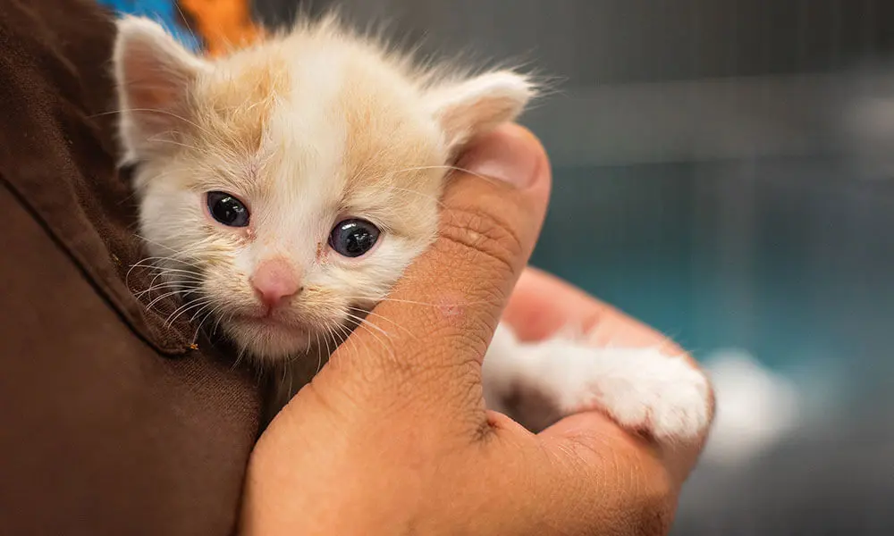
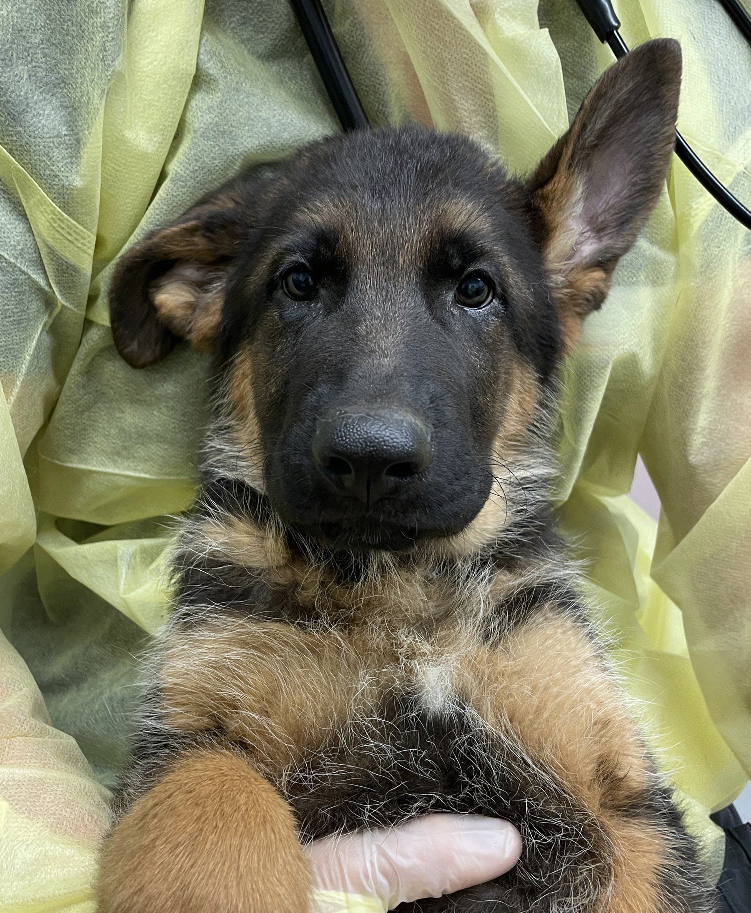

Animal Lifeline
Hope. Healing. A second Chance.
Events & News
Stay updated with the latest happenings at the Durban & Coast SPCA
Stay updated with the latest happenings at the Durban & Coast SPCA. From adoption drives to fundraising campaigns, there is always something exciting going on. Join us and be part of the change!
Have a look at our other event website page
Upcoming Events
2025 Kennels Sleepover
Join us on International Homeless Animals Day, 16 August 2025. Brave the kennels for the night to support homeless animals. R200 per person, R50 for your dog. Includes dinner, games & a goodie bag. Minimum sponsorship goal: R3500. Purchase your ticket here.
Ladies' High Tea
Join us for our Annual Ladies' Fundraising event on 5 September, from 10am - 1pm, at our onsite coffee shop, Coffee Cats Cafe. Further details to follow and ticket sales opening soon.
Book Sales & Mini Markets
Support our monthly book sales and mini markets. Last Saturday of every month: Mini Market & Open Book Room at our SPCA in Springfield Park from 8am-12 noon.
Latest News
Have a look at our other News website page
Successful Conviction!
Our Inspectorate team achieved a conviction for animal cruelty on 17 February 2025. A man who dumped two cats at Morningside was found guilty. Read more
Puppy Rescued from Drain
Just before Durban's June storm, a tiny pup was rescued from a drain. Floodwaters would have swept it away. Read more
Stop Cruelty to Animals
If you suspect animal neglect or abuse, speak up. You may be their only chance of rescue. Read more
Past Highlights
Warm Thanks from Our Orphans
Thanks to supporters for donating blankets and supplies to keep our orphans cosy during winter. Read more
Your Support Was the Best Christmas Gift
Donations ensured we coped with the festive influx of lost, abandoned, and rescued pets. Read more
Recent Stories
Rescue in the Rain: Bella the Kitten
Last Thursday, our team received an urgent call about a tiny kitten stranded on a wet pavement during a sudden downpour. Bella, as we named her, was soaked, shivering, and clearly in need of immediate care. Our rescuers wrapped her in a warm blanket and carefully transported her to the SPCA clinic.
At the clinic, Bella received a thorough health check, warmth, and a nutritious meal. Over the next few days, she began to regain strength and confidence. She started purring, rolling in the blankets, and showing playful energy that melted the hearts of everyone around her.
Bella Finds a Forever Home
Following Bella's rescue, the SPCA shared her story with the community through social media and local networks. Families quickly came forward, eager to meet the little kitten who had captured everyone's hearts. One loving family was instantly drawn to her playful personality and caring nature.
Bella's journey from a helpless kitten in the rain to a cherished family member demonstrates the powerful impact of animal rescue and community involvement. Her story inspired more people to volunteer, report strays, and support SPCA initiatives.
Max's Second Chance
Max, a gentle German Shepherd, was found wandering near an industrial park, thin and scared. Our rescue team noticed that despite his rough condition, his tail wagged every time someone came close. It was clear Max had once known love but had been abandoned when he needed it most.
Over the weeks, Max's spirit began to shine. He loved playing fetch, going for walks with volunteers, and leaning in for head scratches whenever possible. His calm temperament made him a favorite among staff. When a local family visited, they instantly connected with his loyal eyes and warm heart.
Today, Max enjoys a second chance at life with his new family. His story shows that even after hardship, love and care can transform an animal's future. Every adoption helps rewrite a story of loss into one of hope.